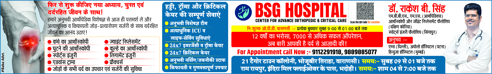
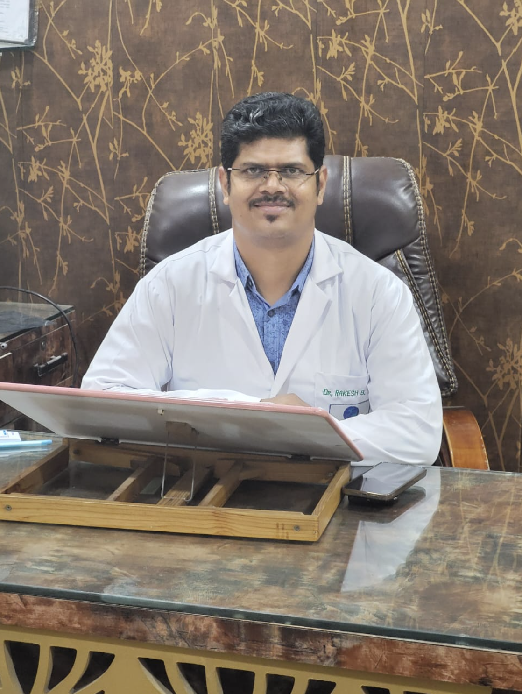
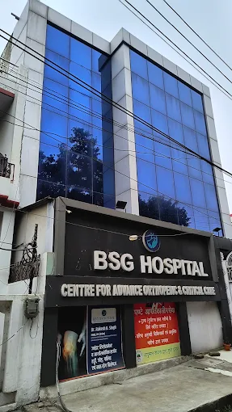
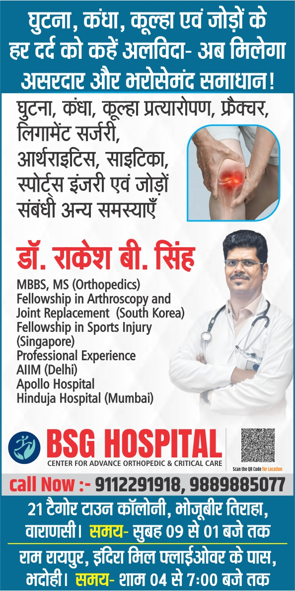
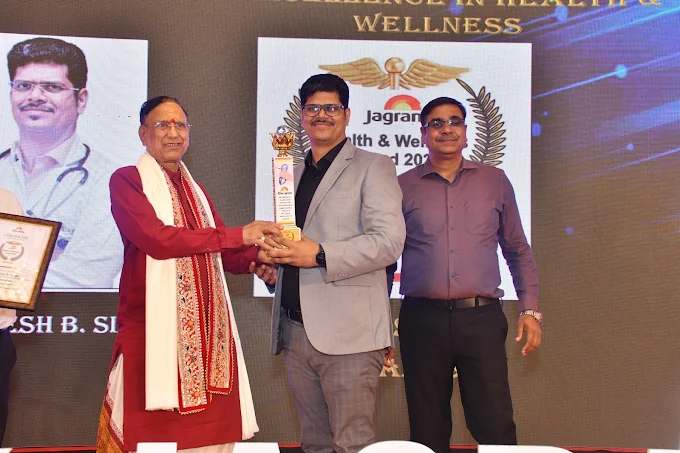
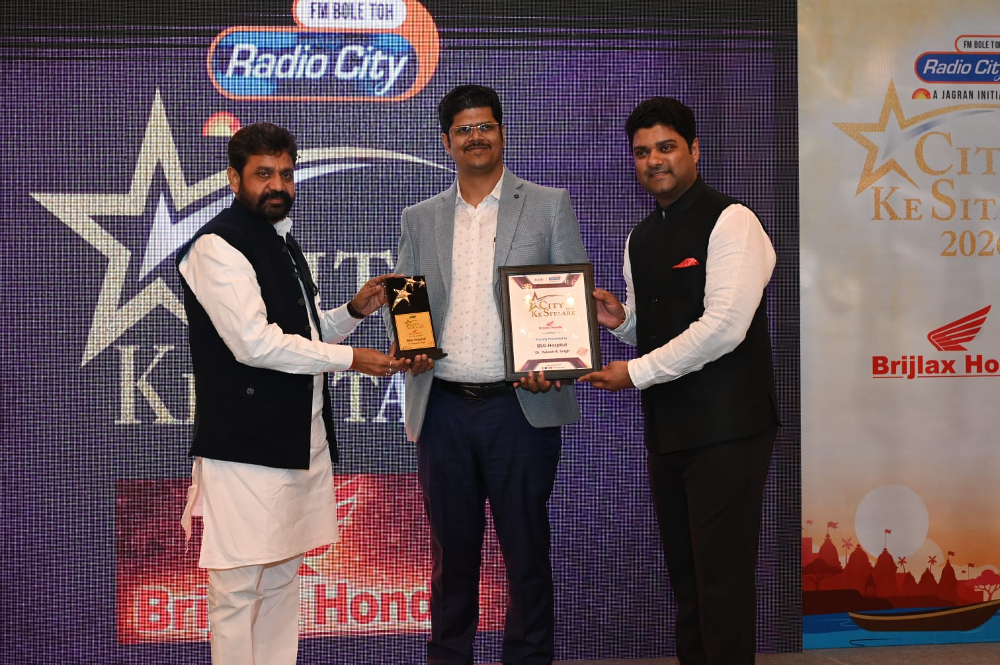
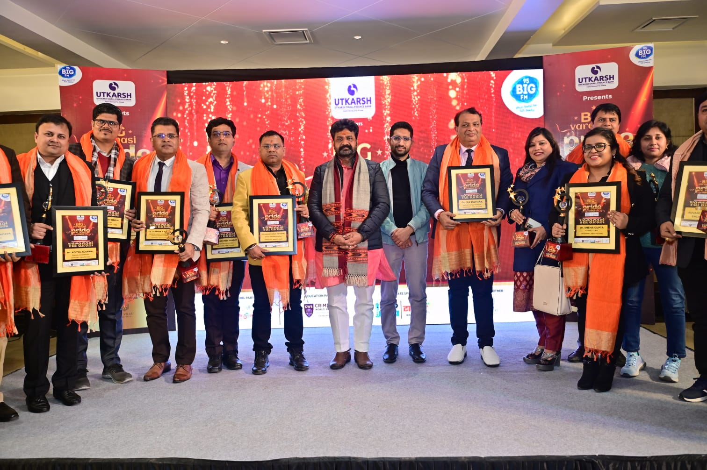
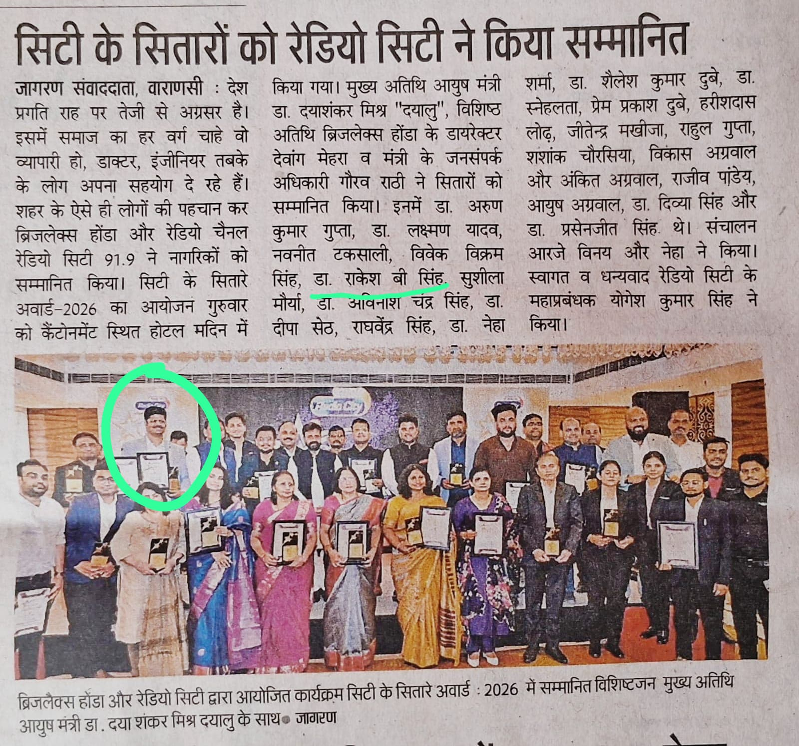
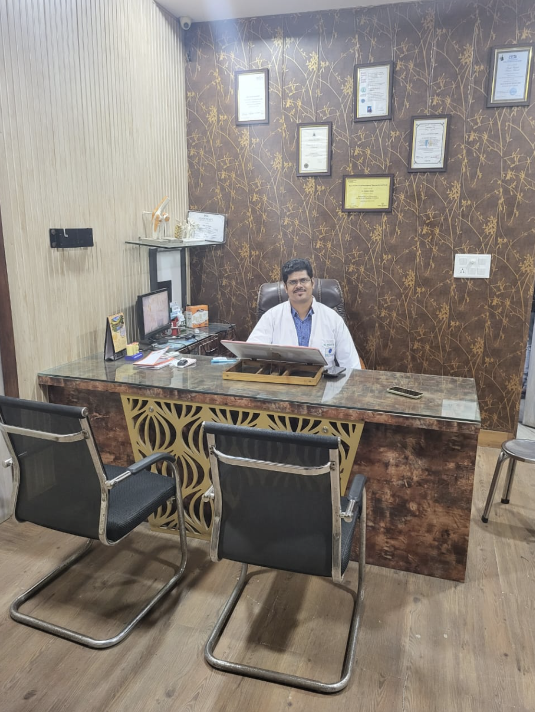
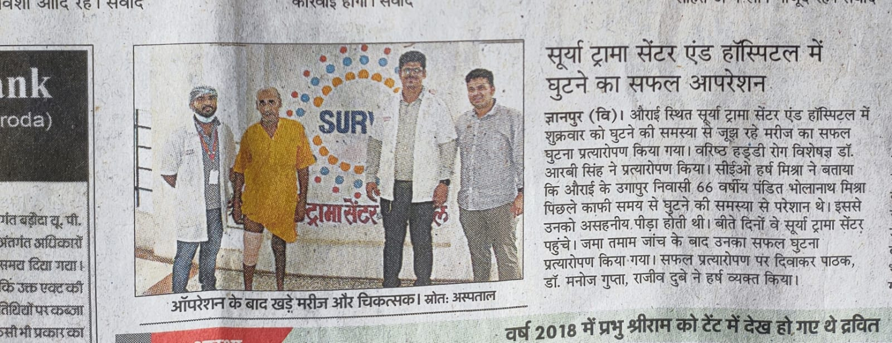

BSG Gallery
Real hospital, doctor and recognition visuals
Every image on this page comes from the provided clinic media, not generic placeholders. That keeps the site authentic and visually consistent with the BSG identity.

Primary hospital banner
Core branding visual with clinic name, specialty statement and contact presence.
Professional portrait
Doctor profile photography used for trust and consistency across the site.
Portrait close-up
Clean headshot for hero and doctor-specific sections.

Consultation environment
An in-clinic image that supports the About and Contact pages.

Hospital exterior
Building image used to ground the brand in a real physical location.

Vertical service banner
Secondary promotional artwork adapted into the new website layout.

Award stage moment
Recognition imagery that strengthens social proof and credibility.

Recognition presentation
Public honors adapted into the trust sections of the website.

Event coverage
Broader community and recognition imagery from the supplied photo set.

Recognition group image
Supports the Patient Trust & Recognition page with authentic media.

Newspaper mention
Press-style visual that helps communicate local visibility.

Team and event visuals
Additional supplied imagery used to humanize the brand.